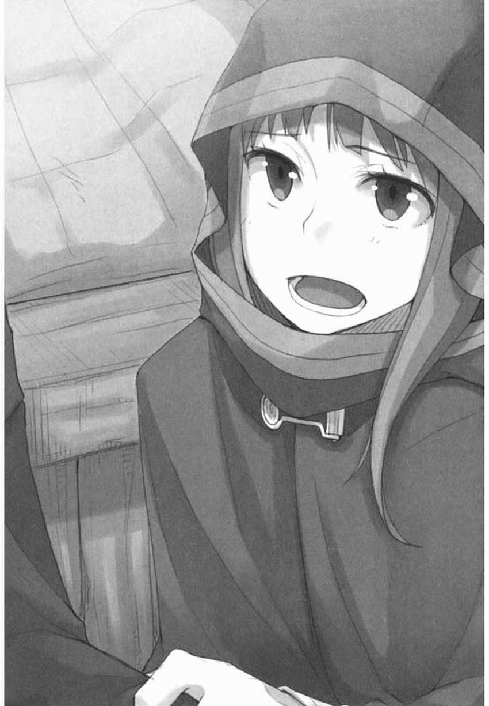

烤製麵包用的柔軟麵糰擺放在廚房的料理台上。
那裡只要用手一擰，就會流淌出細細的清水。廚房四處種植着矮小的植物。
羅倫斯眼前浮現出這樣的場景。
他坐在車伕台上，這樣幻想著，回憶起了多日未曾吃到的剛出爐麵包的滋味，不禁嚥了一口口水。
他們離開鎮子已經三天了，現在並不是懷念熱氣撲鼻的美味食物的時候。在以前，僅僅依靠發了霉、硬得像岩石的燕麥麵包和一捧鹽，他就可以翻山越嶺。現在想想，旅途中有麵包、葡萄酒，還有點別的什麼，已經算是相當豐盛豪華的一餐了。想到此，羅倫斯不禁苦笑起來。
不過，雖然他這樣安慰自己，但最近的旅途中，開銷確實有些過大了，於是羅倫斯的心情也隨之變得有些不安了。
自從十八歲自立開始，到現在已經是行商之旅的第七個年頭了，這也許將是人生中最波瀾壯闊的旅程。
“雞腿肉。”
不知是不是聽到了羅倫斯的喉嚨發出吞嚥口水的聲音，同樣坐在車伕台上的旅伴這樣說道。
她脖子上圍着小狐狸皮做成的圍脖，正悠閒地用手撫摸着蓬鬆的毛皮。
手上拿着的，不是狐狸或者狗的，而是獨特的狼的毛皮。
一般毛皮上的毛比較粗短，質地粗糙。
但這個旅伴手上拿着的，可說是最上等也不為過，到了夜晚甚至能奇蹟般地保持溫度。
旅伴時而用嘴咬着毛的根部，時而仔細地梳理。
如果買的話，要花多少錢啊。
羅倫斯這樣想道，不，應該說又想道。
其實到了現在，他所想的不是買，而是賣出去的話可以值多少錢。
因為，這不是加工品，而是活生生的狼的尾巴。
“那不是你想吃的東西嗎?”
羅倫斯說完，旅伴赫蘿的耳朵動了一下。
那是有着和狼的尾巴同樣色澤，威風凜凜的尖耳朵。
耳朵在慄色的順滑頭髮上直楞楞地豎著，無論怎麼看都不是人類的。
同坐在車伕台上，看起來是個十來歲少女的赫蘿是長着狼的耳朵和尾巴的非人類，她的真正形態是掌管麥子豐收的巨狼。“母鷄比公鷄好。” ’“是啊，母鷄還能下蛋。”羅倫斯想到了美味的煎鷄蛋。只要與赫蘿交談，話題就必定會轉換到食物方面。
這確實符合這位自稱約伊茲的賢狼的少女風格，她的世俗之氣也不是人類能比的。
“鷄……活鷄那種獨特的嚼勁和鮮美的滋味實在讓咱過齒難忘啊，雖然羽毛有些礙事……”
如果這句話是某種玩笑，羅倫斯可以用苦笑作答，但很遺憾，赫蘿是認真的。
她的唇中，隱約潛藏着鋭利的獠牙。
“雖然我沒有生吃過，不過我覺得料理就應該花時間精心烹製。”
“哦?”
“拔掉羽毛，取出內臟，去掉骨頭，放上香草一起蒸，和野菜一起煮，再把香料塞進去，用滾油把皮炸得酥脆，最後塗上香脂油烤……啊，口水都要流出來了。”
“唔……嗯……”
這種最高級的鷄肉料理，羅倫斯也只是聽說過而已，並沒有吃過。
不過，對想象力豐富的赫蘿而言，光是聽一聽就足夠了。
賢狼的自尊，在這樣的時候很值得敬佩。
畢竟，雖然旅途剛開始不久，她還是設法適應下來了。而且，在旅途中，就算她央求自己也不怕。因為，沒有出售的東西是買不到的。由於羅倫斯處于壓倒性的有利地位，他輕咳一聲，隨後說道。“啊，對了，料理就是這樣做的，不過，還有一個地方再花點工夫的話，會變得更美味的。”“……還有一個地方?”赫蘿滴溜溜地轉着略帶紅色的琥珀色眼睛，望着羅倫斯。雖說她的目光中帶著作戲般的狡黠，但那樣的眼神，讓羅倫斯覺得就算讓她撒撒嬌也沒關係。
“在這個世界上，除了公鷄和母鷄以外，還有一種鷄。”
“哦?”
這頭活了上百年，自稱賢狼的狼的記憶中，似乎想不出這種東西。
不過，她並沒有感到不甘心，而是興奮又好奇地問道：“然後呢?”
羅倫斯再次輕咳一聲，接著說道。
“就是把公鷄去勢之後養大的鷄。”
“哦……?那是什麼……”
“那樣一來，肉質就會變得比母鷄還鮮美。既沒有公鷄肉的堅硬感，也不會像母鷄那樣被蛋奪走營養……你在幹嘛?”
“唔……”
赫蘿故意移開目光，隨後露出獠牙笑道。
“那樣感覺確實會更鮮美。”
她的真實形態，是一口就能把羅倫斯吞掉的巨狼。
所以，羅倫斯感到自己身為男性的某種尊嚴被赫蘿嘲笑了。
他咳嗽一聲，又用力再咳嗽了一聲，隨後握住馬的繮繩。
赫蘿雖然沒有再說什麼，但依然開心地一邊“撲哧”的笑着，一邊搖晃着尾巴。
“放心，咱明白，汝到了關鍵時候就會變成一個可靠的雄性。”
赫蘿笑着，露出潔白的獠牙。但身為男性的羅倫斯可無法把這句話當成一句玩笑。
即使明白自己總是被她玩弄于股掌之間，羅倫斯還是無法一笑了之。
“不過……”
“好痛。”
由於突然被揪住了耳朵，羅倫斯揚起繮繩，使馬發出了嘶鳴。
“抱著就算咱求汝買鷄，汝也不怕的想法，就大說特說，這可不像雄性的做法啊。”
看來，他的想法完全被赫蘿看穿了。
赫蘿像扔開什麼似的放開羅倫斯的耳朵，抱著手不悅地說道。
“哼，戲弄汝只是為了回敬而已。……咱可難受得要死呢。”
即使被戲弄算是扯平了，羅倫斯還是不能裝作沒聽到她最後的那句話。
“我說，雖然粗糙了點，但我們的麵包是小麥和黑麥混合烤制的，葡萄酒也是乾淨又解渴，有時候還能吃點乳酪啊，肉乾或者葡萄什麼的，已經夠豐盛了。我以前可經常只帶著大蒜和洋蔥上路呢。這些對我來說，已經相當奢侈了。”
赫蘿雖然總在某些奇怪的場合表現得或像孩子，或像野獸，但基本上，她的頭腦是羅倫斯所不及的。
她並不是個不明事理的人。
隨後，赫蘿平靜地說道。
“咱可真是要死了。”
說完，她望向別處。
這個世界上哪有這種故意裝出來的演技啊?
羅倫斯咬着嘴唇，恨恨地瞪着望向別處的赫蘿。
回應她的話，自己就輸了。
不過，羅倫斯也明白，如果自己無視她，就會變成兩人暗中較勁，而在那種狀況下，先開口的毫無疑問還是自己。
被對方知根知底，就是這種情況。
羅倫斯想，如果自己用更優雅的方式講話的話，也許會使赫蘿在旅途中更開心一些吧。但赫蘿卻並不買帳。“好了，我知道啦。”“……知道什麼?”赫蘿並沒有回頭，只是冷冷地說道。“對不起了，如果遇到賣鷄的，我就買給你吧。不過，旅途中說的話只在旅途中有效。”
這是羅倫斯最大的妥協了。
到了城鎮之後，即使她把嘴皮說破，只要錢包還掌握在自己手中，就絶對不買。
赫蘿依然沒有回頭，只是扇了幾下耳朵。
這表示她在轉動腦筋思考着什麼。
這已經是臨界點了吧。
“咱以前不就說過了嗎，咱可以分辨出人的謊言。”
“當然，我記得呢。”
“是嗎?”
“是的。”
“唔……”
赫蘿沉默了片刻。
羅倫斯像等待宣判的罪犯一樣等待着赫蘿繼續開口，不過，他很清楚自己並沒有犯下什麼罪。
即便這樣，他還是不得不面對這種麻煩的情況。
最後，赫蘿似乎明白了羅倫斯的提議是對自己開的玩笑的妥協，於是她沖羅倫斯笑了笑。
真是狡猾，羅倫斯的內心這樣吶喊道。
因為，看著赫蘿那表情豐富的臉，如果羅倫斯不是已經經歷了數年的獨自旅行的話，恐怕也會像其他無數人一樣被她欺騙吧。
“唔……不過呢，汝啊。”
“什麼?”
在策馬緩緩前行了一段路程之後，赫蘿突然開口說道。
“剛纔說的，不是謊話吧?”
“剛纔的……是指去勢的鷄嗎?”
“開什麼玩笑，是汝那句若途中有鷄就買給咱的話。”
為什麼她要特意確認一遍呢?
羅倫斯的頭腦中一瞬間泛起一個不好的預感，而坐在旁邊的赫蘿抓着他的袖子，使他意識到這並不僅僅只是預感而已。“我是說過那樣的話——”“說過的吧?”赫蘿把臉湊過來，用小狗低吠般的聲音說道。這時，羅倫斯終於發現了。前方不遠處的路邊有人的身影。雖然羅倫斯的眼睛還無法看清楚那裡的情況，但赫蘿已經知道那裡有鷄賣了。
“汝總不至于當着咱的面把說過的話收回去吧?”
沒什麼比赫蘿這種似笑非笑的表情更可怕。
當然，羅倫斯覺得自己有必要耐心地把買一隻鷄要花費許多錢這一情況向赫蘿說明。不過，前提是赫蘿肯聽他的解釋。而現在，怎麼看，赫蘿都不像是會聽他解釋的樣子。羅倫斯看著身邊的赫蘿，嘆了一口氣。如果說了不合適的話，自己有可能性命難保。
“明白了，我會守約的，不過——”
“不過什麼?”
赫蘿一面反問着羅倫斯，一面神情嚴肅地看著他。
羅倫斯不得不仔細思考一會兒，才開口說道。
“只買一隻。”
赫蘿依然看著他，一動不動。
在几乎令人窒息的沉默之後，赫蘿終於笑着望向了前方。
羅倫斯現在一定覺得自己是一隻被獵犬盯上而無法飛翔的鳥。
他這樣想著，把目光移回去，這時，坐在路邊的人發現他們，站了起來。
在走到能看到他臉上掛着笑容用力揮手的距離時，羅倫斯終於看到了他腳下拴着的鷄。
“只買一隻啊。”
羅倫斯再次說道：
“買點什麼路上用吧。”
四周是一望無際的荒野，一個路人也沒有。
嚴冬中，小販在這廣闊的地方獨自等待着顧客，他的裝束有些奇怪，年紀和羅倫斯差不多。
儘管他身材瘦小，體格卻顯得精壯，這是農民獨有的特徵。
在握手的時候，羅倫斯被他手上厚厚的繭子嚇了一跳。
“除了鷄之外，還有特製的啤酒哦，要來點嗎?”
他的強壯程度不是行商者能比的。
儘管衣着簡陋，口中呼着白氣，但他看上去一點也不冷。他爽朗的笑着，用手敲着放在正在啄草的鷄旁邊的、及膝高的桶。
青年倒是興緻很高，但固定桶的鐵箍卻銹得快要散掉的樣子。
羅倫斯撫着下巴的鬍鬚沉思着。
赫蘿沒有催他快點買了鷄就趕緊上路，大概也是由於對身上並沒有穿著旅行裝束的青年為什麼會出現在這裡，還四處張望的這種景象持有疑問吧。
“啤酒可以先品嚐再買嗎?”
總不回應也不好，於是羅倫斯這樣問道。
青年爽快地點了點頭，一面大聲說“當然可以，您請!”，一面拿出計量用的大鬥，打開蓋子舀出啤酒。
“剛盛進去的，還泛着沫子呢。”
羅倫斯嘗了一口，也許是水質好，又或者是麥子的選料優質的緣故，啤酒意外地好喝。
因為赫蘿也想喝，他也讓她嘗了一口，隨後赫蘿便馬上用請求的目光看著他。“覺得味道如何?”青年再次開口詢問，羅倫斯點了點頭，並把目光轉向鷄。羅倫斯知道，赫蘿藏在斗篷下的尾巴雖然沒有搖晃，但已經膨脹起來了。有了鷄和啤酒。還有什麼比這更能讓她高興的呢。“不錯。就把鷄和啤酒一起買了吧。”青年高興得不得了，完全沒有注意到赫蘿那藏在斗篷裡的耳朵興奮得豎了起來。
不過，羅倫斯並不是單純帶著赫蘿到處行走的旅人。
既然身為行商之人，他就會這樣說。
“只是，我想要好幾隻，而不是一隻。”
“啊?”
雖然發出驚叫聲的是那個青年，但赫蘿也同樣吃驚地望着他。
赫蘿也是明白目前物價行情的人，也大概知道現在一隻鷄有多麼貴。
而且，她也是個得到東西就會付出相應回報的懂禮儀之人。
所以，當羅倫斯說出想買好幾隻的時候，她才會感到吃驚吧。
“附近應該有村莊吧?我們並不急着趕路，可以的話，請帶我到村裡去買。”
羅倫斯知道，這個青年並不是挑着擔子到處叫賣的商人。
那麼，他應該是為了賺取現金，或者交換必需品才專門跑這麼遠的吧。
正如羅倫斯所預料的，青年在愣了一下之後，點點頭，隨後又再次用力點點頭。
“啊，您真想買嗎?當然可以啊!”
滿面喜色的青年一面說著，一面利索地用繩子綁住桶背起來。
之後，他用麻袋把各種雜物裝起來，放到桶蓋上，提起拴鷄的繩子大聲說道。
“那麼，請讓我為您引路吧。”說完，青年興緻高昂地邁着大步從岔路前行。青年所走的路前方雖然是荒野，但也有馬車難以通過的地方吧。做出了這種判斷的羅倫斯牽着繮繩，朝那個方向走去。早料到他會這樣做，赫蘿抓住了他的袖子。

“汝要是生氣，就說出來。”她以難堪的神色說道。她大概是認為，要買好幾隻鷄這種話，只是羅倫斯信口胡說的吧。
羅倫斯不禁笑出聲來，不過，他立刻發現赫蘿正生氣地瞪着自己。
“啊，抱歉抱歉，我只是有個想法。”“……想法?”赫蘿吃驚地望着他。“這也許可以稱做商人的第六感吧。
”雖然赫蘿露出懷疑的神情，但羅倫斯並不介意。因為，他儘管總是被赫蘿的演技和陷阱矇騙，但對自己作為商人的眼光還是充滿自信的。
“順利的話，就真的多買幾隻給你。”
聽了這句話，赫蘿的表情並沒有任何變化。
“咱就不做任何期待地等着好了。”
不過，羅倫斯卻抱著期待。
因為他覺得，意氣高昂的青年帶自己去的地方，一定會有生意等待着自己。
青年引領羅倫斯去的小村莊，周圍可以看到遠處的森林和泉水。
那裡看起來非常寒酸，原因或許是那些七零八落，看起來像建好的村子一樣的建築，以及胡亂開墾的田地吧。
規劃不統一的城鎮或者村莊有的混亂而充滿活力，有的則充滿破落的氣息，這個村莊就屬於後者。“真是偏僻的地方啊。”赫蘿直言不諱地說出自己的想法，羅倫斯也很理解她的心情。村鎮只有與別的村鎮，以及領主之館道路相通，才能叫做村鎮。可是，這個村莊本來就看起來寒酸，並且沒有一條能直達村莊，可以稱得上道路的路，可以說，這裡几乎完全與外界隔絶了。
大陸上的孤島，用這個詞描述這裡非常恰當。
“啊，到了!歡迎來到吉薩茲。”
他們前方豎著一排木柵欄，似乎在宣告這裡就是村莊的土地。
青年走過柵欄，朝羅倫斯他們揮着手讓他們跟上。
這是一個什麼都沒有的小村莊。
剛纔一直目不轉睛地盯着羅倫斯他們的村民們紛紛走了過來。
“總之，請這邊走!先到我家落腳吧!”
青年並沒有向村民們介紹羅倫斯，而是得意地一面這麼說著，一面引着馬車前行。
不僅赫蘿，連羅倫斯都忍不住笑了起來。
看來為外來的人引路，對青年來說是值得誇耀的事。
不過，從青年說出的“落腳”這句話可以看出，這裡是正教徒的村落。
羅倫斯露出一切都如自己所料般的笑容。
青年粗魯地敲了敲一個房間的門，房門立刻打開了，青年走了進去。
屋裡傳來一陣交談聲，隨後，一個穿著整潔的婦女慌忙地從裡面跑了出來。
她的容貌和青年非常相像，這讓羅倫斯覺得很有意思。
“啊，歡迎光I}6j。對了，你去把村長叫來吧!”
羅倫斯一直微笑着，不過，這並不是因為對方朝他微笑。
赫蘿露出心領神會的表情，大概是察覺了羅倫斯笑容的含義。
“啊，感謝您的熱忱歡迎，我只不過是個旅行商者……”
“沒關係，旅行的商人也一樣歡迎!請先進寒舍吧，若有招待不周之處．還請多包涵。”
羅倫斯在車伕台上客氣地笑着，把目光投向赫蘿。
對這種細節有敏鋭察覺力的赫蘿輕輕點了一下頭，隨後向那個婦人露出微笑。
省掉一一解釋的工夫，就等於獲得了巨大的利益。
羅倫斯也因此得以大展演技。
“那麼，就打擾貴府了。”
“請進，馬車就停在外面吧。老公!你快去準備飼料，再打些水來。”
婦人叫的，是人群中一個扛着鋤頭的男子。
他應該就是這裡的一家之主。這個男子帶著一臉對自己家發生了什麼事情、迷惑不解的神情，按照吩咐跑了起來。
羅倫斯從車伕台上下來，赫蘿也跟着下來了。
在走到門口的時候，羅倫斯看到剛纔的青年牽着一個老人從遠處走來。
房間裡的地板既非木製，也不是石鋪的，只是把土做了簡單的固定後弄成。地板上挖了個坑作為灶膛，周圍放置着桌椅，靠在牆壁上的農具全是木製的。
房樑上掛着大蒜和洋蔥，在牆上較高位置的架子上放著一些乳白色的東西，大概是某種麵包吧。
整個建築非常大，大概是由於這裡住着好幾戶人家。
雖然並不討厭城鎮裡的旅館，不過，由於自己也是出身貧寒，住在這樣的地方反而更能讓羅倫斯感到安心。
不管怎麼說，赫蘿也顯出一副更安心的樣子。
“哈哈，原來如此，您是要從這裡往北走啊。”
“是的，準備去一個叫雷諾斯的鎮子。”
“是嗎……不管怎麼說，這個村子的狀況正如您所見，有旅行商者光臨就已經是謝天謝地了。”
都說身份能改變人的性格，似乎有着村長身份的人不知為什麼，大抵都給人比較相似的感覺。矮瘦的吉薩茲村長深深低下頭。“我來到這裡也是神明的指引，還受到如此熱忱的款待，雖然我只是一介行商者，不過若有什麼吩咐，我自當儘力而為。”“那就拜託您了。”羅倫斯露出的笑容並非出於客套。因為他的心中確實認為這是神明的指引。“那麼，為了感謝神明讓我們相遇……”村長說完，羅倫斯與赫蘿一起拿起木杯，將酒一飲而盡。“……啊，啤酒真好喝啊。”“讓您見笑了，感謝神明的時候，最合適的是葡萄酒，不過現在葡萄藤剛種下。”
“葡萄酒的味道是由神明決定的，而啤酒的味道是人來決定的。想必你們一定有讓啤酒如此好喝的秘訣吧。”
村長雖然謙虛地搖着頭，但喜悅的神色卻溢於言表。
赫蘿安靜地看著桌子，倒不是因為覺得這樣的談話十分無聊，也不是嫌桌上的食物寒酸。
汝到底在打什麼算盤?
赫蘿用疑惑的眼神望向羅倫斯。
“實際上，釀造的時候確實使用了秘傳之法。”
不知是不是由於啤酒受到稱讚而感到高興，村長這樣說道。
要給老人良好的印象，就必須安靜地聽他說話。
羅倫斯以更加感興趣的表情回應着村長說的話，突然，外面發生了騷動。“這是……怎麼了。”村長說完，回頭望去，這時——“村長!又是杜雷他們!”一個雙手沾滿泥土的男子闖進來，神色慌張地指着外面大叫。村長面色凝重地站了起來，向羅倫斯他們低頭說道。“事出突然，實在抱歉。”“沒關係，我已經受到很周到的招待了，何況，您還身負一村之長的重任。”村長抬起頭，又鞠了一躬，隨後急忙趕去外面。村長作為村民的代表單獨招待旅人似乎是這裡的禮儀，在村長出去之後，屋子裡只剩下羅倫斯和赫蘿兩人。
“汝……”
“你是想叫我把話說明白?”
赫蘿一面抓起豆子放進嘴裡，一面點頭。
“這裡可是屯民之村啊。”
羅倫斯說完，赫蘿像鸚鵡學舌一樣重複了一遍。
“屯民?”
“就是指出於各種各樣的原因，移居到未開墾的土地上進行新的生產建設的人。在偶然，或者說非常偶然的情況下，在這几乎等同於大陸孤島的地方也會出現這樣的村子。”赫蘿一面喝着啤酒，一面四處張望。“為什麼會在這樣的地方呢。”接着，她像小孩子一樣詢問道。“這只是我的猜想，在進村的時候，你不也看到在泉水邊堆放著木料和石塊嗎?我想大概是打算用那些材料建造修道院吧。”“建造修道院……嗎?”“對。畢竟，那是虔誠的正教徒向神明祈禱的地方。為了避免俗世的喧囂，保持順從、純潔、清貧的生活，才選擇了這樣偏僻的地方。”
這是有着不知道赫蘿能否遵守、哪怕只有一天的嚴格規定的清淨之地。
不過，做出那種規定的，並不是身穿長袍，手拿聖經的神聖羔羊。
這個村子裡的人，要麼是被親人當做罪人逐出家門，要麼是與異教徒有關係的人吧。
在偏僻的地方修建修道院，並不僅僅是建造建築物，還包含了為確保修道士們的生活起居而進行的耕種，取水等工作。他們以繁重的勞作，作為向修道士們贖罪的方式。
“唔……不過，如果真的像汝所說的……”
說到這裡，赫蘿似乎想起教會裡的人是什麼樣的傢伙。
那樣的話，赫蘿自己也能找到答案。
“也就是說，汝打算利用他們的把柄?”
這種說話方式，明顯是故意的。
“我只是想幫助有困難的人而已。”
“說得好聽。汝不就是看上了這個村子，要把它當成做買賣的機會嗎?”
羅倫斯一直保持着舒緩的神情，因為現在這裡可以說是一個沒人攪混水的漁場。
農具、工具、家畜、以及衣服和紡織工具。村民只在村子裡生活的時代已經是遙遠的過去了。
如果只有村子一個存在，就必然會出現需求與供給。
村民帶著肥壯的鷄和鮮美的啤酒沿著街道販賣的村子，對行商者而言無疑是一座金山。
在這裡購人鷄和啤酒，把生活必需品提供給村子。
只要能一手包辦整個村子的買賣活動，就能賺到比啤酒更令人垂涎的大錢。
赫蘿滿臉驚訝，羅倫斯卻並不在意，只是喝着啤酒。
赫蘿動了動藏在斗篷下的耳朵，笑着對羅倫斯說道。
“那麼，就好好地助人吧。”
“？”
還沒等羅倫斯反問，房間的門就被人推開了。
是剛纔來叫村長的男子。
羅倫斯知道對方有事相求。
“抱歉，旅行者，如果您識字的話，可以請您幫個忙嗎?”
在商人都不會拜訪的偏僻村莊，羅倫斯被人問起是否識字。
吃驚的羅倫斯能勉強從椅子上站立起來，也算是一種幸運了。
“給我差不多一點!之前商量的事，你打算反悔嗎?我的田是六西亨。”
‘‘那又如何，我也分了六西亨，你的應該是五西亨。可為什麼我的田比較小，還建了這種柵欄……”
用不着任何說明，羅倫斯也能明白在遠處大聲嚷嚷的兩人是為了什麼而爭執。
另外，從西亨這個單位，也能大致猜測出他們來自什麼地方。
在那個被叫做雷瓦利亞的森林與泉水之國，曾經有一位被稱為賢公的西亨二世王。
他領土內的土地所使用的丈量單位西亨，就是他雙手展開的長度。
不過，就算使用了賢公制定的明確單位，圍繞土地產生的紛爭也依然從未間斷過。
在大聲爭吵的兩人面前，村長一句話也說不出，只是獃獃地站着。
如果是有着悠久傳統的村子還好，可是在這新興的村子裡，權威這種東西並不存在。
如果沒有據理下達裁決的權威，就無法阻止這無盡的爭執。
“村長，我把人帶來了。”
“哦，太好了……”
一副為難神情的村長一看到羅倫斯，就發出嘆息向他求助。
“真是讓您見笑了。”
“是關於土地分配的問題吧?”
只要是在各個村莊之間輾轉行商的人，就總會遇到這樣的問題。
大概認為羅倫斯是個具有慧眼的人，村長低下了頭，彷彿在說“您說的沒錯”。
“實際上，這裡是向某位貴族提出申請後建立的村莊，不過，圍繞那個時候定下的土地大小問題，爭執一直沒停過……雖然每次都是雙方協商解決，但這兩個人似乎有着舊怨……”
兩人的大聲爭吵，逐漸從開始的講道理升級成了用惡毒語言相 互攻擊的言語衝突。
村民們嫌吵，都躲得遠遠的，只有赫蘿一人頗有興緻地觀看著。
“那麼，應該有土地所有證的複製本吧?”
這應該就是自己被問起是否識字的原因吧。
羅倫斯問完後，村長立刻點了點頭，從懷中拿出一張羊皮紙。
“就在這裡，不過，這裡沒有人看得懂……”
沒有一個人識字的村莊，就是一個尚未被打開的寶庫。
商人會把契約轉變為文字。
那麼，面對讀不懂契約的人，怎麼可能一直保持誠實呢?
“請讓我看看。”
這樣的村莊本來就極少，而最初到訪的幸運商人就更是少之又少了。
羅倫斯嚴肅地接過羊皮紙，心卻是激動得快要蹦出來了。
“……啊，這是……”
不過，在展開羊皮紙的那一刻，他的嘴角露出淺笑，並感嘆世界並不總是如自己想象得那麼簡單。
村長的目光游移不定，而羅倫斯的笑容也變成了苦笑。
誰都讀不懂是當然的。
因為，羊皮紙上是用聖教會文字記載土地分配情況的。
“村子裡也有幾個稍微識字的人，可惟獨這個，誰也看不懂……大概是某種外國文字吧。”
“不，這是教會使用的特殊文字，我也只認識固定的慣用語和數字……”
用教會文字寫成的土地所有證和特權證，羅倫斯也見過幾次。
赫蘿在旁邊看著，但她似乎也看不懂。
因此，她馬上失去了興趣，又把目光轉移到爭吵的兩人身上。
“是這樣啊，我知道爭吵的原因了。”
羅倫斯再次把目光移向羊皮紙，得出了結論。
隨後，他問道。
“那兩個人，以前是工匠什麼的吧?”
赫蘿笑着繼續觀看，直到兩人的爭吵變成拳腳衝突的時候，終於有人上來阻止了。
村長猶豫着，正在想自己是否也應該去勸阻時，聽到羅倫斯的問話，他吃驚地回過頭來說道。
“正，正是這樣，您怎麼會知道……”
“土地的分配是每人各六西亨，這一點沒有錯。可是這裡……”
說著，羅倫斯指了指某個單詞。
村長也眯起眼睛仔細看，不過，這本來就是他看不懂的文字，就算這樣做也還是不可能看懂。 ，
“這裡寫着圈羊。其範圍是一邊六西亨，另一邊五西亨。”
村長不解地看著羊皮紙，過了一會兒，終於明白了。
他用力閉上眼睛，拍着謝頂的腦門，小聲說道：“原來如此。”
“是這樣啊，他們不知道圈羊嗎……”
土地分配對村民而言是重要的事。
在出發前往新天地之前，不識字的人一定會請人靜忙讀內容。
可是，在那個時候，甚至現在都沒刨過土地的人看到那些專門術語，會怎麼樣呢?
能留下印象的，自然只有數字。
正因為這樣，雙方纔會寸步不讓地爭執。
“看來海·巴頓氏向教會捐的款多一些吧，因此，圈羊的六西亨那邊是歸巴頓的。”
“巴頓是左邊那個傢伙……真是的，居然為這種事情爭執……”
“就算是說圈羊，對沒接觸過這個字眼的人來說，還是弄不明白啊。”
所謂圈羊，和字面意思一樣，是指把羊圈起來以後的土地面積，不過並不是要養羊。主要的目的，是到夜間把村莊或者修道院共有的羊關在柵欄中，用它們的糞便使土地變肥沃。
大圈關的羊多，小圈關的羊少——這是常識。從中不僅可以知道羊的數量，還可以測量面積。所以便可知自己田地的最大面積，以及關在自己一半田地裡的羊的大致數目。村長對羅倫斯恭敬地道謝，隨後小跑着趕到兩人所在之處。他開始向被村民勸開的兩人解釋。羅倫斯笑着觀望，不一會兒，就看到兩人面色尷尬地握了握手。“什麼嘛，這麼幹脆。”兩人握手言和的乾脆程度甚至讓意猶未盡的赫蘿非常失望。“好記性不如爛筆頭。”
這是師傅傳授給羅倫斯的心得。
師傅還舉了例子，說行商者無法勝過城鎮商人的原因之一，就是買賣時產生的金額不是記在帳簿中，而是記在大腦裡。
在發生爭執的時候，獲勝的總是有白紙黑字的一方。
“因為若每次都發生爭執的話，生意就沒法做大，所以，契約是非常重要的。”
赫蘿毫無興趣地聽羅倫斯說完，恨恨地說道：“怪不得汝也有過想對買鷄的事不認帳的念頭。”“就是這麼回事。”羅倫斯說完，看到村長向他緩緩低下頭表示感謝。他輕輕擺了擺手。原來如此，幫助別人也並不是什麼壞事啊，羅倫斯這樣想道。這天夜裡，由於解決了引起兩人爭執的這件村中懸案，村民豪爽地用烤全鷄招待了羅倫斯他們。
這當然是不用付錢的，啤酒也可以盡情喝。
這樣一來，赫蘿也該滿意了吧。
儘管羅倫斯這樣想，但赫蘿在隨便享用了一點美食之後，就像虔誠的修女一樣早早告退了。
在村民帶領下，赫蘿先行回到了今晚借給羅倫斯他們住宿的房間。
也許是由於旅途疲憊，肉和酒她都沒什麼胃口。
由於不排除這種可能性，羅倫斯也在象徵性地短暫出席了宴會之後，回去了。
寒冬時節旅行了三天三夜，身體會處于半適應半不適應的狀態，這種時候如果不注意調理，即使是慣于旅行的人也會病倒。
而且，赫蘿已經累倒過多次了。
即使是被稱為宿于麥子中的豐收之神的賢狼，也不是永遠不會感到疲倦的。
羅倫斯在村民帶領下回到屋子，安靜地打開了門，裡面顯得昏暗而安靜。
羅倫斯接過獸油燈，慢慢走進屋內，看到正中央放著專門為他們安排的簡易床。
一般情況下，村民都是在地上鋪了稻草睡覺，而這樣則是把他們當做客人對待。
只是，床只有一張，不知這是村民無奈之下的安排，還是他們考慮得過于周到。
不管怎樣，羅倫斯還是走到早已縮在毛毯中的赫蘿面前，低聲問道。
“你沒事吧?”
如果她睡着就沒問題了。
過了一會兒，羅倫斯依然沒聽到回答，看來，她確實是睡着了。
如果次日她醒來的時候情況有些不對勁的話，就花點錢在這裡多住幾天吧。
羅倫斯一面這樣想，一面熄了燈，鑽進墊着稻草，鋪了薄麻布的床上。
雖然還有些擔心赫蘿的身體狀況，但她看起來似乎並無大礙。
儘管睡的是稻草，但也比馬車舒服得多。
只是，躺下的時候，只能看到屋頂和房梁，從煙筒的洞射進來的月光稍微有些刺眼。
羅倫斯閉上眼睛，回想著村裡的情況。
村民大概有三十到四十人。由於附近有森林和泉水，野生蜂蜜、果實以及魚相當豐富，也適合放牧。
這裡的土壤只是岩石比較多些，但並不貧瘠。
修道院建成後，這片土地也足以養活上百人吧。
既然現在還沒有別的商人看上這個村子，那麼可以說，這個村子的生意已經被羅倫斯獨占了。
在宴會的時候，羅倫斯也提過關於買賣鐵農具、牛馬等事。
有貴族願意捐款在這偏僻的地方建造修道院，原因多半是這個貴族自己或者其身邊的人死期將近。
建造計劃安排緊迫，甚至連必要的東西都沒準備完全就急着要開工。
而且，捐款者並不一定是住在這片土地附近的。
由於土地所有權是記錄在紙上的，往往會如同被風吹動的絨毛一樣輾轉到各地，因此，從未見過，也未聽說過的遠方的人前來捐款，並不是什麼奇怪的事。結果，無論何時，如同滿是補丁的乞丐服般雜亂的土地所有權都是紛爭的導火索。
於是，住在附近的人由於害怕被捲進紛爭，經常出現不與移居到該土地的新居民接觸的情況，這個村子就是典型的例子。附近城鎮和村莊的商人由於無法確定這裡的情況，並不願意來這裡做生意。村長也說過，青年帶著鷄和啤酒坐在沒人經過的路邊，也實屬無奈之計。
對羅倫斯而言，那個青年是一座溝通的橋樑。而對村民來說，羅倫斯就是神明的使者。
難怪自己沒喝多少酒，卻紅光滿面。在行商途中多次夢到的景象，如今就在眼前。那麼，究竟能賺到多少利潤呢。隨着夜色變深，羅倫斯的大腦也逐漸變得冷靜。比起宴會上的啤酒，大腦打如意算盤的時候更容易讓人沉醉。“真是個蠢笨的雄性啊。”赫蘿微微動了動身，嘆着氣這樣說道。“怎麼，你醒了啊。”“被汝的笑聲吵醒了。”聽赫蘿這麼一說，羅倫斯不由得摸了摸自己的臉。“咱在宴會的時候狀態反常地退席，汝一點都不擔心，還嘿嘿地傻笑……”
既然赫蘿這樣說了，那就應該是她故意裝做不適而退席。
只是，聽到她指責般的話語，羅倫斯也有些氣惱。
“難道你看不出來嗎，聽到你的聲音這麼活潑，我有多麼放心。”
在同一條毛毯中，赫蘿搖晃着尾巴。
不過，能夠看穿謊言的赫蘿貼著羅倫斯的臉，露出了獠牙。
“開什麼玩笑。”
儘管無論怎麼解釋赫蘿都會生氣，不過這樣似乎更好。
赫蘿滿臉不高興地轉過身去。
既然她的態度如此明顯易懂，就表示她並沒有生很大的氣。
“你為什麼早早退席呢?啤酒和鷄不是都非常不錯嗎?”
特別是啤酒，確實很好喝，據說，裡面還專門加了用乾燥的香草研磨成的粉末。
鷄也是肥得流油，她到底有什麼不滿意呢。
赫蘿並沒有馬上回答。
過了好一會兒，她終於輕輕開口說道。
“汝覺得那啤酒很不錯嗎?”
“啊?”
羅倫斯反問，並不是由於赫蘿的聲音太小。
“咱可喝不下去。真不敢相信，汝能那樣津津有味地喝下那麼臭的東西。”
當然，人的喜好各有不同，不喜歡那種香味也不是什麼奇怪的事。
只是，羅倫斯弄不明白赫蘿如此生氣，甚至有些悲傷地說出這些話的原因。
羅倫斯的眼珠轉了一會兒之後，用水泡破裂般輕柔而緩慢的聲音說道。
“那啤酒裡，似乎加入了那些人故鄉的香草。畢竟，那種香味非常獨特，喜歡的人會覺得非常不錯，不喜歡的人就——”“開什麼玩笑。”毛毯中的赫蘿踢了羅倫斯一腳，轉過臉說道。她的臉看起來有些扭曲，不過，那並不是從天窗射進的月光產生陰影造成的。
在這樣的時候，赫蘿總是把想說的話強忍在喉嚨中。
而羅倫斯也總是猜不透原因。
“算了!”
說完，赫蘿轉過臉，縮起身體。
別說在馬車上總是蓋在羅倫斯腳上的尾巴，連共用的毛毯都被赫蘿完全捲走了。
看到赫蘿耷拉著的耳朵，羅倫斯就知道她什麼都聽不進去了。
不過，感受着她後背的溫暖，羅倫斯知道她希望自己察覺到某種事。
“…………'，
那絶對不是啤酒不合她的口味而惹她不高興這件事。啤酒的事，只不過是引起憤怒的契機而已。
也許是因為自己在遇到那個青年之後，就過于沉迷地打起與這個村子交易的如意算盤吧，羅倫斯反省道。
雖然獵人經常與獵犬一道狩獵，但當獵人迎娶新娘的時候，獵犬也會表現得非常嫉妒。
不過，惟獨赫蘿不會嫉妒，雖然這是赫蘿所說的、胡來的雄性才會產生的想法。
羅倫斯一面撓着頭，一面偷偷看著赫蘿的後背。
不管怎麼說，從明天開始，還是多關注一下赫蘿比較好。
畢竟，這頭狼的心情，和山林中的天氣一樣善變。
比起在寒冬的雨夜把毛毯蓋在商品上，自己抱著雙手蜷縮着度過漫長的夜晚，能在有屋頂的地方睡在鋪着稻草的床上，已經算是非…。天亮的時候，羅倫斯一如既往地打着噴嚏醒來，在擔心自己的現狀之前，他儘力這樣安慰着自己。
身邊的赫蘿依然裹着毛毯呼呼大睡，並不時發出鼾聲。
羅倫斯並非完全不生氣。
不過，看到她的睡臉，羅倫斯只能輕輕嘆了口氣，悄悄地下了床。
雖說是房屋，這農村裡的建築看上去只不過是用泥封住的洞穴罌了。
羅倫斯呼着白氣，哪怕稍微動一下，凍僵的身體都會刺痛。
也許，他該慶幸地板不是木製的，而是泥土。
為了不吵醒赫蘿，羅倫斯輕輕地走了出去，一面對著天空伸懶腰，一面祈禱今天是個晴天。
井的周圍早已有人在打水，從遠處傳來牛、豬和羊的叫聲。
這是個如畫一般的勤勞之村。
這樣的話，早飯也許就不用期待了。
羅倫斯苦笑着想道。
赫蘿醒來的時候，已經快到中午了。一般情況下，睡到這個時候，恐怕會遭到村民的白眼。
不過，村民們依然滿面笑容，也許是因為這裡是屯民之村吧。
多數村民都有過帶著所有家當和牲畜長途跋涉的經歷。
他們明白，旅人有着自己的生活方式。
只是，正如羅倫斯所料，沒有提供早餐。
畢竟，即使在物產豐富的村子裡，早飯都被視為一種奢侈。這個樸素勤勉，為了支撐修道院而存在的村子就更不用說了。
“汝在做什麼。”
也許，赫蘿是看出不會提供早飯，才故意睡到接近中午的吧。
赫蘿手上拿着的，是夾着為過冬而準備的豬肉臘腸、並切成薄片的黑麥麵包。
接受免費的午餐會讓羅倫斯感到過意不去，不過現在完全沒必要顧慮這個。
赫蘿一面大口咀嚼着，一面看著羅倫斯的手，因為羅倫斯正儘力做着村民的委託自己辦的事。
雖然羅倫斯有許多話要對一邊嚼着麵包、一邊喝着啤酒的赫蘿說，但昨夜的不愉快還沒有完全消除，處理不好的話，也許會產生不必要的麻煩。
儘管這種想法是對赫蘿的縱容，但羅倫斯還是壓住心中的諸多抱怨，回答道。
“翻譯。”
“翻……衣?”
吃着東西的時候別說話，羅倫斯想這樣提醒她，但他也明白這種提醒根本沒用。
羅倫斯把赫蘿嘴角殘留的麵包屑拿掉後，點了點頭。
“為了避免再發生昨天那樣的爭執，村民拜託我把那些麻煩的教會文字替換成他們熟悉的文字。”
如果在城鎮裡接到這樣的委託，一定能得到一筆數量不小的錢。
不過，在這裡儘管拿不到分文，但相對地，羅倫斯也不能保證所有教會文字都能正確地翻譯出來。
“嚯……”
赫蘿若有所思地斜着眼睛，看著桌上的羊皮紙，以及翻譯用的木版，過了一會兒，她便失去興趣，開始喝啤酒。
“汝幫忙做事的話，咱的飲食也就沒什麼顧慮了。”
赫蘿扭曲地笑着說完這句話，把最後一口麵包塞進嘴裡，從羅倫斯身邊走開了。“我也想飲食無憂啊。”羅倫斯看著赫蘿的背影，嘆着氣無奈地說道。隨後，他轉過身準備繼續工作的時候，突然發現——“喂，別把我的那份也——”羅倫斯話音未落，赫蘿已經拿着第二個麵包開始吃了。“別擺出一張臭臉，這只是玩笑而已。”“那麼，為什麼麵包會少掉這麼多?”“咱倒是覺得，就算汝像咱這樣吃也沒關係呢。”“這可真是榮幸啊。”羅倫斯以嘲諷的語氣說完這句話，赫蘿有些不高興地坐到他的旁邊。
這是赫蘿式的撒嬌吧，羅倫斯剛這樣想，赫蘿就帶著狡黠的笑容看著他。
“那麼，下次咱就去求村裡的人吧。老爺，老爺，請施捨點麵包給咱吧……”誰聽到這種話都會覺得很尷尬吧。不過，如果羅倫斯妥協的話，就過分縱容赫蘿了。“你到底要吃掉幾個人份才滿意啊?”羅倫斯不高興地說完這句話之後，嚼着從赫蘿的魔爪下救出來的麵包，繼續工作。赫蘿不高興地嘆了口氣。該嘆氣的是我才對啊。羅倫斯這樣想著。但是赫蘿卻說道。“如果村民這樣問咱，咱是不是要捂着肚子這樣回答。”理睬她就輸了。羅倫斯拿起筆，裝作沒聽到。“是啊……一定是兩人份。”赫蘿靠過來，湊近羅倫斯的耳朵說道。羅倫斯把麵包都噴了出來，但這絶對不是誇張的反應。赫蘿狡黠地大笑起來，並故意問道：“什麼嘛，汝才知道咱是個吃得下兩人份的大胃王嗎?”
在談判中，能最大限度地活用自己所有解數的人是最後的勝者。
在這一點上，赫蘿可以說是過度使出自己的解數了。
我決不會再聽赫蘿說話了，哪怕是一句。羅倫斯一面想著，一面把噴在木版上的麵包屑擦乾淨，這時，赫蘿伸出手把夾在麵包裡的一片香腸搶走了。
“呼呼，汝大清早就坐在這裡皺眉頭，去外面呼吸一下冷空氣也好啊。”
在剛開始旅行的時候，只要聽到這樣的話，羅倫斯都會回一句“要你管”，惹得赫蘿生氣。
但這次羅倫斯沉默了一會兒，閉上眼睛靠在椅背上。
隨後，像投降一樣把手舉到肩部，說道。
“因為在收穫結束之後，即使還有麥粒落在田裡，也沒辦法了。”
“唔。咱可不一定喜歡這裡的麥子。”
這是只有宿于麥子中的赫蘿才能開的玩笑。
戴着頭巾，穿上斗篷，赫蘿藏起搖晃着的尾巴，把手放到門把_卜．。
“確實，喜歡的話可就麻煩了。畢竟，如果你想去撿來吃掉的話，誰也攔不住。”
羅倫斯說完後，赫蘿氣得鼓起臉，而他則繼續吃着麵包。
在村子裡閒逛，這也許是不錯的事。
何況，自從離開帕斯羅村之後，赫蘿已經很久沒到過如此普通寧靜的村子了。
雖然從那以後旅途並不平靜，但到了農村，還是能感受到一種熟悉親近的氣息。
羅倫斯微笑着，看著在帕斯羅村也經常能見到的、用來作肥料的稻草，以及耕田的農具。
“因為與城鎮沒有交流，即使到了這個時期，這裡也要種豆子吧。”
一般情況下，到了這個時期，農活都會停止，取而代之的是紡絲、織布、或者削木棒製作農具等室內的工作。町是，這裡並非如此。
即使是最近的城鎮，坐馬車去也要花上三天，而且為了避免麻煩，沒有人願意來這裡做生意。
畢竟，確保吃飯問題是最優先事項，其它事情都可以暫時放一邊o
“豆子在土地貧瘠的地方也能生長。當然，目前這裡不必考慮這種事也能有好收成。”
村子外面突然之間就冒出了一望無垠的田地，這麼說雖然有些誇張，不過，以這裡的人數，能開墾出如此廣闊的田地，確實是一件讓人佩服的事。
之所以沒有柵欄和溝，是因為田地是共用的吧。
即使是現在，在泉水邊也依然有許多幹活的人，看得出來，他們是在挖水渠。
說謊雖然不好，但有時候也挺有用的。按赫蘿所說的到外面閒逛的羅倫斯已經不再皺眉了。
“汝覺得可以在這個村子搾取多少錢?”
圍着村子的柵欄看起來似乎要倒掉了，但實際上比想象中要結實。
赫蘿坐在柵欄旁，羅倫斯也在她身邊坐下，向在田裡看到他們的村民揮了揮手之後，看著她說道。“這話可真不好聽。”“汝昨天的表情不是更難看嗎?”難道說，赫蘿昨晚不高興，是因為自己被慾望迷了眼睛嗎?羅倫斯大腦裡閃過這樣的想法。
不過，既然赫蘿現在這麼興高采烈地說著話，那應該並不是那樣的吧。
“只要存在物品交換，就會產生利益。既然用不着特意去搾取，自己就會流出來，那麼只要伸出舌頭去舔就可以了。”
“哦……聽起來好像葡萄酒似的。”
赫蘿所說的，是用皮袋或者布把葡萄裝起來，懸掛在房樑上製造的葡萄酒。
由於是以自然的重量壓碎葡萄，只用滴下來的果汁釀造，其醇美的口感是沒有什麼能比得上的。
赫蘿還是這樣一頭有着豐富飲食知識的狼啊。
“這次用不着借助你的力量，就能大賺一筆了。以在旅途中偶遇的賺錢機會來說，這會是一筆大數目。因此，你想吃多少鷄都沒問題。”
風輕輕地吹着，遠處傳來牛的叫聲。
真寧靜啊，羅倫斯剛這麼一想，就聽到身後的鷄叫。
“不管怎麼說，我一直在借助你的力量。所以像這樣不是也很好嗎?”
雖說錢還沒有到手，但想一想總是可以的吧。
而且，只要查看帳簿就能看出，比起赫蘿吃喝掉的金額，在赫蘿的幫助下賺取的數目要大得多。
她說的飲食沒什麼顧慮，確實不是謊話。
“汝。”
“嗯?”
“汝真的認為咱什麼顧慮也沒有嗎?”
這一刻，羅倫斯覺得時間彷彿停止了，他的大腦裡只考慮着一件事。
“你昨天晚上就是為這個生氣的嗎……”
雖然會求羅倫斯買這買那，赫蘿卻不是什麼都求他買。
用不掉的部分會還給羅倫斯，在旅途中也總是與羅倫斯保持着微妙的互補與平衡。
赫蘿害怕被稱為神，因為她不願意被當作特別的存在而被供奉起來。
那麼，羅倫斯的關心或許會產生反作用。
“我覺得不用在意……那就是我的想法。畢竟，你也有自己的原則。”
聽了這話，赫蘿狠狠地盯着他。
似乎在說，什麼都要咱說出來才明白嗎?
“哼，咱可是無知的狼啊，連那些什麼文字都不認識。”
本來就因為沒能幫上什麼忙而感到不安的赫蘿，一覺醒來還看到羅倫斯在伏案工作。這些，也許就是讓她生氣的因素。“啊，那就這麼辦吧。”“?”神情稍有緩和的赫蘿看著羅倫斯。羅倫斯笑着對她說道。“去給村民講一些關於種植麥子的建議不就好了?”這句話聽起來就像難以判斷赫蘿是否生氣的羅倫斯無奈之下開的玩笑。
赫蘿露出複雜的神情，隨後氣鼓鼓地把頭扭向一邊。
“稍微用一點知識就能讓他們高興。那些連圈羊都不知道的人正在田裡幹活呢。為什麼不可以這麼做呢?”
接着，羅倫斯補充說道：“讓他們高興的話，我的生意也會變得更順利啊。”
赫蘿用几乎想哭出來的表情看著羅倫斯，似乎在說，不要用這種狡猾的方法安慰咱。
“唔……”
“不用考慮太多，這難道不是舉手之勞嗎?”
羅倫斯笑着說完之後，赫蘿閉上眼睛開始考慮。
她的眉頭緊鎖，耳朵在頭巾下動着。
真是個堅守原則的人啊。
羅倫斯一直笑着，隨後把目光從赫蘿身上移開，望向天空中的飛鳥，這時——“羅倫斯先生。”聽到遠處有人呼喚自己，羅倫斯把目光移回村中。“羅倫斯先生。”聲音從身後傳來，羅倫斯回過頭，看到村長的身影。“啊，抱歉，翻譯還沒有……”“啊，不是說這個。這件事情讓您費心了，不過，我還有事想與您商量……”
“商量?”
羅倫斯抑制住興奮，因為他知道，這裡畢竟是在籌措物資方面有困難的村子。
羅倫斯把目光移向赫蘿，她卻面無表情，顯得完全沒有興趣。
“若是我能做到的，一定儘力而為。”
如果不帶著笑容，這句話聽起來就完全是謊話。
羅倫斯以燦爛的笑容說完後，村長如釋重負般說道。
“這樣啊，太謝謝您了。實際上，最近像昨天那樣因土地問題而起的爭執經常發生，所以，希望能借用您的智慧……”
“智慧?”
羅倫斯笑着反問，村長面有難色地說出了難題。
羅倫斯抱著頭，煩惱地看著還未翻譯完的羊皮紙和木版。
村長來商量的事，在每個村子都會發生。
不過，一般的村子有着從很早以前傳下來的獨特解決辦法，那就是神喻、村長的權威、附近領主的證明檔案、以及不容違反的村中共同會議。
所以，那些村子裡几乎不存在這樣的問題。
新建立的村子往往才建好就解散，這是因為缺少約束人們的強力措施。
在這種困難的情況下，村長來找羅倫斯商量的，自然是關於土地分配的問題。
村子的範圍是領主隨便劃分的，而各個村子又會在劃分好的範圍內決定土地的分配。
問題就在這裡。
決定好的只有土地的大小，並沒有寫明以哪裡為基準點。
“所以，現在雖然已經隨便定好了土地的大小，在問題出現之前，不定好基準點的話，就不好辦了。”
“是啊，村子剛建好不久，土地基本應該沒什麼問題。可是，只要畫個圖就能知道．不決定基準點就隨意分割土地的話．土地會被分割成許多小塊，而且，看不出哪塊是誰的。”
“不用畫圖，用咱的麵包片做比喻就行。”
赫蘿開心地說道。
“燕麥麵包?那麼硬，又不好吃。”
“如果問好不好吃，那自然是不好吃。不過有嚼勁，咱的牙齒有時候會發癢呢……”
說著，赫蘿露出了獠牙，羅倫斯不由得退了幾步。
“什麼嘛，與咱的獠牙相比，汝的牙齒才更可怕呢。”
“啊?”
羅倫斯吃驚地一問，赫蘿就把手放到胸口，說道。
“咱可是被汝的毒牙咬得死死的啊。”
在外面的鷄叫了三聲之後，羅倫斯仍沒有回答，而是又抱起了腦袋，赫蘿不高興地踩了他一腳。
“汝該不會是想說，他們的事比咱的話更重要吧。”
“這是當然的。”
“什……”
赫蘿睜圓眼睛，豎起耳朵，羅倫斯才意識到自己失言了。
“啊，不是，我的意思是說，不回應村長的期待的話，不就無法賣人情給他們了嗎?賺錢的好機會只有現在，而與你談話什麼時候都——”
“看來，咱的好意也要加個期限了!”
說著，赫蘿把頭扭到一邊。
對其他會加期限的人，羅倫斯有自信把事情處理得八面玲瓏，可若是面對赫蘿，他的那一套就完全行不通了。
只是，難得村長把關係到整個村子利益的重大事情交給自己。
若讓他失望的話，也許就無法一手包下這裡的生意了。
因為，儘管用金錢換不到愛，卻可以用恩情換到金錢。
“……”
羅倫斯想不出該對赫蘿說什麼好，不過，眼前的問題卻不得不考慮，一籌莫展的他站在桌子前說不出話來。
在獨自行商的時候，是不可能碰到這種問題的。
師父也沒有教過自己解決的辦法。
不過，若把兩者放在天平上，孰重孰輕一目瞭然。
羅倫斯下定決心，正準備開口的時候——
“汝真是愚蠢，甚至讓咱懷疑汝到底有沒有學習能力。”
坐在桌上的赫蘿的視線自然比羅倫斯高一些。
再加上她以這種高高在上的口氣說話，羅倫斯自然會感到些許氣惱。
即使這樣，赫蘿那略帶紅色的琥珀色瞳孔中，散髮着不容反駁的光芒。這並沒什麼道理可講。是羅倫斯在與赫蘿旅行的途中得到的經驗。“剛纔咱說過什麼?咱忍着害臊，對汝說過什麼?明明咱就在旁邊，汝還一個人抱著頭髮愁……”
“啊……”
羅倫斯現在才意識到。
赫蘿明明在為幫不上自己的忙而不安，自己卻一個人抱頭煩惱。
赫蘿恨恨地看著他。
而羅倫斯要做的，不是道歉，而是這樣詢問。
“可以借用你的智慧嗎?”
羅倫斯艱難地吐出這句話，赫蘿板著臉，看著他。
赫蘿的尾巴，在拒絶與答應的天平上輕輕搖晃着。
隨後，赫蘿嘆着氣這樣說道。
“最笨的，也許是咱啊。”
沒等羅倫斯思考這句話的含義，赫蘿又接着開口說話，羅倫斯只得直起腰板洗耳恭聽。
“不過，咱的智慧，也只不過是在那個令人火大的帕斯羅村用過的辦法。”
“……石碑和樹木等標記有可能會被移動，所以不能採用。即使要以檔案的形式定下基準點，由於那種基準本來就是不存在的，所以也會引起爭執。”
當然，完美的解決之道只有神才想得出來，所以，只要想出大家都能接受的具有正確性和普遍性的辦法就可以了。
而且，對方專程來商量，只能給出大家都想得到的辦法的話，有可能讓對方非常失望。
羅倫斯正在想赫蘿該不會是要顯露真身的時候，被赫蘿用肘部拐了一下。
“開什麼玩笑，汝難道忘了咱在帕斯羅的時候為什麼會哭嗎?”
看來，她要用的並不是神喻這種辦法。
那麼，是把村民全部集中起來，將基準點植入他們的記憶深處嗎?
“可是，要怎麼做呢?即使是通曉星象運行的人，也不可能完全正確地測出東西南北。當然，可以像乘船時一樣把山或者泉水當做標記……可是，那種標記是不可能寫入檔案中的。而像那樣畫出的地圖也非常隨意。”
如果是在旅途中使用的地圖，隨意一點也沒關係。
可是，現在需要的，是能夠在土地分配時使用的具有準確性的記錄。
“在昨天那兩個人發生爭執的時候，汝不是說過人的記憶是模糊的嗎?”
“是啊，所以需要記在紙上。”
“唔，變成文字的話，誰看起來都一樣，所以值得相信，這個咱也明白。可是，人的記憶真的那麼模糊嗎?”
羅倫斯不明白赫蘿想說什麼。
可是，他也只能這樣回答道。
“至少，在人與人對立的時候，憑任何一方的記憶來解決問題，都缺少客觀性。而且，在土地分配的問題上，記錄必須保存幾年，甚至幾十年。”
赫蘿認真地聽著他的反駁，附和道：“是啊。”
隨後，她說道。
“不過，用這種辦法怎麼樣?”
赫蘿有些興奮地湊到羅倫斯耳邊，輕聲說出了辦法。
羅倫斯吃驚地看著赫蘿的臉，賢狼開心地搖晃着頭。
“就像咱說的，山啊泉水之類的大型標記雖然散亂隨意，但組合起來就可以指明正確的地方。在山上的時候也是這樣，只要從山頂環顧四周，就可以知道自己身處何處了。”
村民也應該知道這些吧。
不過，正是由於沒有辦法把這些寫進檔案，才會引起爭執。
在劃定土地範圍的時候，人們容易感情用事，也是因為把這些寫進檔案相當麻煩。
“不過，任何人都能接受，而且不會遺忘的記憶，實際上是存在的。”
如果採用赫蘿說的這個辦法，所有的人都能夠接受。
不管怎麼說，羅倫斯是想不出更好的辦法了。
他從椅子上站起來，牽起赫蘿的手。
記錄的問題，在任何時候都是難題。
赫蘿的故鄉約伊茲的事也是這樣，正是因為變成文字，被人保存在石壁和昏暗的地下室中，才得以流傳下來。
而且，能做那些事情的只有少部分人，能否繼續留存數百年，只有神明知道。
如果是口頭傳承的話，將會相當模糊，這一點，從唾沫橫飛的無用爭執就可以看出。
那麼，既然沒有辦法，是不是就這麼算了?若真如此，這個世界就不會向前發展。
為了想出所有人都能接受的辦法保存下記錄，使得在數十年後發生爭執時能解決爭端，人們絞盡了腦汁。
赫蘿在麥田中偶然聽到過的，就是其中的一種辦法。
“羅倫斯先牛．所有人都集中起來了。”
“您辛苦了，那麼，代表呢。”
“感謝神明的指引，正好有一個合適的人選。”
聽了羅倫斯的計劃後，村長的反應和羅倫斯聽到赫蘿說出辦法時是一樣的。
用那樣的辦法啊?村長吃驚地問道。不過，那樣的話應該可行，村長隨後點頭認可。
那種辦法用不着特殊的技術，也不需要工具和費用。
更重要的是，用那種辦法的話，在幾十年後記錄也可以精確地保存下來，而且能被大多數人接受。
村長讓人們集中在很早以前就被列為基準點候補地點之一的井邊。
接着，他在人群中選出保存記錄的代表。
在考慮到各種因素之後，決定由赫蘿擔任實施者。
因為，她有着旅人這一特殊立場，而且，這樣決定的話也會更有效果。
集中起來的村民只知道要決定基準點，他們半信半疑地靜觀着事情的發展。他們也曾為了想出能讓大家都接受的辦法而努力過，，有這種懷疑是自然的。
村長把手搭在挑選出來的代表肩上，咳了一聲，說道。
“我以村長以及全村人的名義，在此向全知全能的神明宣佈，在長期懸而為決的土地分配問題上，于此定下本村的基準點。”
儘管村長的聲音有些乾啞，但在這平坦廣闊的土地上，誰都能清：晰地聽到。
“將各位召集到這裡，既是為了讓各位做見證，也是為了十多年後，若再有爭執發生時，各位能想起今日之事。”
先不說羅倫斯，赫蘿一直低着頭，神情楚楚動人。
由於昨天晚上的宴會中，她只吃了很少的食物，因此村民們似乎認為她是個虔誠的修女。
那樣的話，由她來擔任實施者顯然最合適。
村長又咳嗽了一聲，說道。
“接下來要進行的儀式，是請這兩位旅行中的賢者傳授有古老歷史的土地分配之法，作為村長，我推薦他為代表。”
接着，一位年齡用一隻手就可以數出來的少年被從村長身後推了出來。
這位少年有着明亮的大眼睛和一頭美麗的金髮，看起來就像一位天使。
儘管他不知道自己接下來要做什麼，或者說人們會對他做什麼，但他的身邊已經圍滿了神情嚴肅的大人。
看得出來，這位少年非常緊張。村長繼續說道。
“誰有不同意見嗎?”
人群中有幾個人互相看了看，但誰也沒有把手舉起來。他們完全不知道接下來要進行的儀式是什麼，自然會有這種反應。
當然，村長也補充說，在儀式完畢之後，任何人有意見都可以提出來。
羅倫斯和村長看法一致，都認為不會有人提出異議。
“那麼，現在開始。”
沒有人出聲。 ’
村長對少年小聲交代了幾句話之後，把他推到羅倫斯他們身邊。
少年站穩之後，回頭看了看村長，又朝羅倫斯望去。在看到村長示意自己走過去之後，少年有些膽怯地朝羅倫斯走去。
在與附近的城鎮和村莊沒有交流的村裡，連大人也會對旅人感到害怕。
少年一面緩慢地走着，一面朝人群看去。
羅倫斯知道，他在尋找自己的母親。
“拜託你了。”
少年走過來之後，羅倫斯笑着說道，並伸出了手。
少年誠惶誠恐地握住他的手，應了一聲。
接着，羅倫斯向他介紹赫蘿。
赫蘿的身材嬌小，而少年甚至比她更矮。
儘管赫蘿戴着頭巾，但走近之後還是能看清楚她的容貌。
少年挺直了腰，看到赫蘿正對自己微笑，於是也害羞地笑了笑。
在與赫蘿握手的時候，不知道是不是因為村裡沒有年輕姑娘和少女，少年露出了親切的笑容。
“咱的名字是赫蘿，汝呢?”
“啊……我叫克、克羅利。”
“唔，克羅利啊，好名字。”
赫蘿摸着少年的頭，稱讚了他的名字，少年像被抓癢癢似的縮起了脖子。他顯得非常高興。甚至把儀式的事都完全忘到腦後了。“那麼，克羅利，接下來做個遊戲吧。沒關係的，不會很難。”
聽了赫蘿的話，少年想起了自己的立場，表情突然變得僵硬。
不過，赫蘿輕輕擁抱了他一次之後，他終於鼓起勇氣。
男人的天性大抵都是一樣的，和年齡沒什麼關係。
“首先，向北方祈禱。”
“祈禱?”
“對，祈禱什麼都行，汝們不是每天都進行祈禱的嗎?”
赫蘿多少具有一些教會的知識。
少年點了點頭，過了一會兒，按照自己的做法交叉起了雙手。“北方有北方的天使，南方有南方的精靈。只要向他們祈禱‘請賜予我們美食’，願望就能實現。”
赫蘿頑皮地笑了笑，少年也笑了起來。赫蘿催促了他一下，少年
立刻開始祈禱。“當天使和精靈傾聽我們的願望時，會出現預兆。請好好記住大地和泉水的位置以及形態，千萬別把預兆看漏了。”
少年對赫蘿的話一一點頭。他睜大了眼睛，努力記住眼前的景色，隨後嚥了一口口水，開始祈禱。
東、南、西、北。
在向四個方向祈禱完畢的時候，少年一定在心中詠唱了自己知道的所有美食的名稱吧。
“唔，辛苦你了。接下來，克羅利。”
就樣就可以了嗎。
少年一面想著，一面像溫順的小狗一樣看著赫蘿。
“天使和精靈最喜歡笑容了。請微笑吧。”
純真的少年露出了自己最燦爛的笑容。
這一瞬間，風的聲音停止了。
隨後，人們聽到“啪”的一聲!
“!”
現場頓時鴉雀無聲，靜得甚至能聽到人們屏住呼吸的聲音。
所有人都吃驚地看著眼前的景象。
赫蘿一面甩着自己的手，一面苦笑着。
那是認真而無情的一擊。
赫蘿讓少年笑，是為了避免他咬到自己的舌頭。
突然被扇了耳光的少年甚至忘記擦鼻血，也忘了從地上爬起來，只是用驚訝的眼神看著剛纔還像天使一樣溫柔的赫蘿。
“雖然人的記憶是模糊的，但也有一生都忘不了的瞬間。勇敢的少年克羅利即使過了數十年，也一定不會忘記此時此刻此地的景象吧。”
赫蘿笑着對村民們說了這句話之後，他們先是發出了嘈雜的唏噓聲。
之後回過神的他們產生了一陣騷動聲，隨後，騷動變成了笑聲。
他們來到這個村子，一定是離開了自己早已熟悉的土地。
在踏上走向新土地的旅程之前，他們一定會帶著不安與期待，回頭看自己曾經居住的村子或者城鎮。
也一定會在凝望過東南西北各個方向之後，才踏上旅程。
所以，如果問他們，他們絶對能肯定的回答。
自己能夠準確地指出自己回望故鄉時所站位置的準確方位。
“對這個儀式有異議的人請舉手!”
村長大聲說完之後，所有人都安靜了片刻，隨後一起回答道：“沒有異議!”
村民們交口稱讚神明和赫蘿的智慧，甚至有人興奮得跳起舞來。
赫蘿與村長，還有少年的母親走到少年身邊，伸出手把他拉起來。這時他才明白髮生了什麼事。
感到臉上火辣辣的少年依偎着母親嚶嚶哭泣。
“在咱生活過的村子裡可不是搧耳光，而是捏起拳頭打呢。”
事先就知道會發生什麼事的母親聽了這句話，笑了起來。看來，她為自己的兒子承擔了保存村中重要記錄這一職責感到非常自豪呢。
村長一面向神明祈禱着，一面對羅倫斯與赫蘿表達感激之情。
“唔。這件事總算圓滿解決了。”
赫蘿挺着小小的胸，得意地說道。
無論哪個村子，都會把發生了重要事情的那一天定為特殊的日子，並舉行宴會。
吉薩茲村也不例外。這天夜裡，村中舉行了盛大的宴會。
村長與村民們紛紛要求與羅倫斯和赫蘿握手，表達感激之意，甚至把他們的手都握腫了，而他們的名字，也將作為村子發展里程中不可或缺的重要人物流傳下去。
到了這一步，羅倫斯已經毫無疑問地與這個村子結下了深厚而永久的友好關係。
黃昏時分，羅倫斯面帶無法掩飾的喜悅神色，等待着宴會的開始。
委託他做的翻譯工作也結束了，羅倫斯坐在椅子上，伸了個懶腰。
在他的身後，悠閒地躺在床上的赫蘿也舒展着雙臂。
“完了嗎?”
“是啊，總算完成了。”
“那麼，接下來就是盡情吃喝玩樂了，是吧。”
“接下來還有商談等着我呢。當然啦……”
羅倫斯故意停頓了一會兒，把手放於胸前，慇勤地說道。
“多虧有個賢明的旅伴。”
羅倫斯故意那樣說，赫蘿自然也故意挺起胸回應他。
當然，羅倫斯說這句話的時候，有一半是認真的，實際上也確實是這樣。
別說是鷄，就算能裝滿整架馬車的啤酒，他也願意買給赫蘿。
“我欠你的人情又增加了，你希望我怎麼還?”
羅倫斯故意用半開玩笑的口吻這樣說，因為他的心正為明天的商談而雀躍不已。
這個村子將有無限的發展空間。
而且，在修道院建成之後，甚至有可能發展為城鎮。
“唔……什麼都可以嗎?”
“你這種問法會讓我感到害怕而無法回答。對了，限一百枚銀幣以內吧。比如再為你添一套上等的衣物之類的，這個應該沒問題。”
赫蘿低頭看了看自己穿的衣服，隨後閉起了眼睛。
她是在考慮要求自己買什麼吧，會是蘋果嗎，又或者是蜜桃。
赫蘿的尾巴開始搖晃，看來她終於想好了。
不過，從她那溫柔的表情可以看出，她想到的東西一定價格不菲。
“如果不行就算了。”
“難得你會這麼沒信心啊。”
赫蘿笑了笑，隨後指着羅倫斯說道。
“汝剛纔做的工作?”
“工作?你是指這個嗎?”
“對，就是文字的工作。汝不是說過嗎，如果在城鎮裡接到這樣的委託，可以得到一筆數額不小的錢。”
識字也是一項特殊的技能。
代寫書信自不用說，如果是和正式檔案相關工作的話，可以得到相應的高額報酬。
“怎麼，想讓我替你寫什麼嗎?”
“嗯?這個……唔!”
“這種事還不是小菜一碟……別的還要什麼嗎，比如蘋果啊，蜜桃什麼的。”
赫蘿難得會優先考慮食物以外的東西。
也許是在談論保存記錄的時候，讓她想到要把自己故鄉的事保存下來吧。
“那些雖然也很有吸引力，不過，食物吃完了不就沒有了嗎?正像汝所說的，變成文字才能長久地保存下來。”
赫蘿說話的時候，臉上帶著羞怯的表情。看來，羅倫斯猜的沒錯。羅倫斯點了點頭，說道。“如果叫我寫本厚厚的書的話，我可辦不到。”“不，長度並不重要。”赫蘿跳下床，靈活地躍到桌上坐著。不太長的東西，現在馬上就可以寫。“那麼，要我寫什麼呢?”聽了羅倫斯的詢問，赫蘿並沒有立刻回答，而是望向遠方。她的表情似乎在思考內容，又像在逐字逐句地確認每一句話。看來，這對她來說非常重要。在思考了相當長的時間之後，赫蘿吐了口氣。“書名就叫這個，賢狼赫蘿的……”羅倫斯急忙拿起羽毛筆，展開還沒使用過的羊皮紙。赫蘿並沒有停頓，接著說道。“歸鄉之路指導契約書。”羅倫斯停下筆，先用眼角餘光，隨後轉過頭看著赫蘿。“人的記憶畢竟是模糊的，如果被遺忘可就不好了。”赫蘿的表情認真，準確地說，就像平時責備羅倫斯時的表情。羅倫斯沒有說話。他的大腦中依次浮現出自從來到這個村子之後，赫蘿露出的不高興的神情。
赫蘿說過，自己是因為幫不上忙而不安，所以才生氣的。
不過，這只是藉口。
真正的情況是這樣的。
羅倫斯說的“帶赫蘿回故鄉”的約定，只不過是口頭約定。
可是，羅倫斯卻不經大腦地說人的記憶是模糊的，然後便一直為村子的事情忙碌着。
“啊，不是……可是……”
終於開口的羅倫斯說出的卻是這樣一句話。
雖然難以用語言說清楚，但羅倫斯一直堅信，無論與什麼樣的商業契約相比，自己都會優先遵守與赫蘿的旅途之約，並認為赫蘿也明白這一點。
所以，儘管自己確實說出了不經大腦的話，但他也無法接受赫蘿因此對自己發火。
“可是?”
赫蘿冷冰冰地反問道。
羅倫斯也不是不明白，有理的是赫蘿。
而且，自己確實欠考慮。
就在羅倫斯連忙辯解“不是。”，並準備道歉的時候。
“唔。咱已經不止一次被汝嚇到了。不過，也正因為這樣，才忘不了契約。”
赫蘿突然笑了起來，說道。
“既然汝反省了，就原諒汝吧。”
羅倫斯如果想回她幾句，也不是無話可說，這一點，赫蘿應該也明白。
所以，羅倫斯按照赫蘿所希望的這樣說道。
“……不，真的很抱歉。”
“唔。”
赫蘿的耳朵滿意地搧動着。
“不過呢……”
說著，赫蘿再次板起了臉，俯視着羅倫斯。
不知道赫蘿究竟要做什麼的羅倫斯自然地擺出防禦架勢，赫蘿卻把臉湊近他，說道。
“如果說不需要契約書，那是不是要咱用別的東西來當這次的報酬呢?”
羅倫斯稍微愣了一下，隨後點點頭。
這是當然的。
羅倫斯這樣想著，突然覺察到赫蘿的想法，不禁大叫起來。
“啊，你的意思是——”
“就是用咱和汝寫旅行契約書的報酬能買到的東西。啊，還不知道咱能不能全部吃完呢。”
赫蘿得意地笑着，搖晃着的尾巴几乎把桌子上的所有東西都打翻了。
羅倫斯根本猜不出到底有什麼樣的陷阱，在什麼地方等待着自己。
他已經失去了話語的主導權。
完全沒有反駁的餘地。
“呼呼，汝的表情，和剛纔克羅利的一樣啊。”
赫蘿一面說著，一面戳他的鼻子。
羅倫斯連露出厭惡的表情、把她的手指撥開的力氣都沒有了。
赫蘿跳下桌子，靈巧地翻身跳到靠着椅背的羅倫斯身後。
“那麼，汝是不是也該哭鼻子呢?”
羅倫斯只有無奈地笑笑。
他從椅子上站起來，開口說道。
“那樣也不錯，幸好有讓我依靠的人。”
赫蘿笑了。
羅倫斯下定決心，如此說道。
“不過呢，就憑你那小小的胸部，還不知道能不能讓我完全地依——”
一陣清脆的聲音響了起來。
赫蘿甩着手，面帶微笑。
羅倫斯牽着赫蘿伸過來的手，踉踉蹌蹌地站起來。
赫蘿依然面帶微笑。
這種笑容明顯是虛偽的，不過，羅倫斯知道把它變成真正笑容的魔法。
赫蘿之所以依然面帶這種微笑，目的就是催促羅倫斯趕快詠唱那種魔法。
羅倫斯沒有選擇的餘地。
他緩緩張口，開始詠唱魔法。“這樣，我就永遠都不會忘記你的笑容了。”
赫蘿的尾巴輕輕一搖，握著羅倫斯的手更加用力了。
幾百年之後，赫蘿的笑容將會被這個村子遺忘，留下的，只有名字。
即使用文字，也無法將她的笑容也一起留下。
屋外，正熱火朝天地進行着宴會的準備。
今宵的酒特別能引人醉。
赫蘿微微低下頭，露出羞澀的笑容。